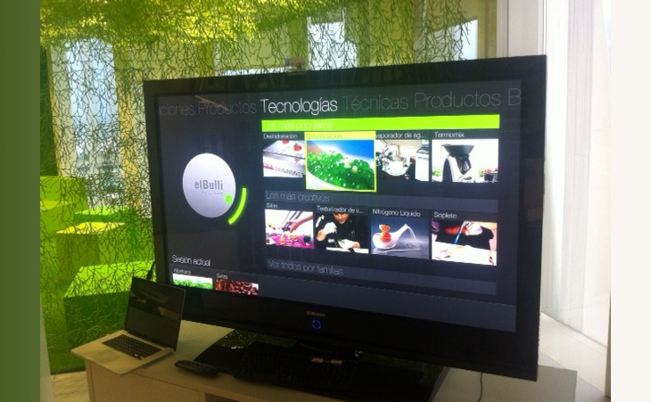

Problem to solve
Provide a teaching tool for a kitchen academy that works through hand gestures and voice control alone — letting students and mentors stay focused on the real kitchen pots instead of a screen.
My role
Conducted research and designed the interaction patterns — specifically looking for natural gestures — to create an innovative, hands-free user interface.
Process
- Interviews with chefs and stakeholders from the restaurant.
- A card-sorting exercise to find the best way to structure content (information architecture).
- User testing with a working prototype.

Achievement
- Integrated the entire recipe book into the interface, letting users navigate through categories hands-free.
- Presented the product to Telefónica and El Bulli leadership.